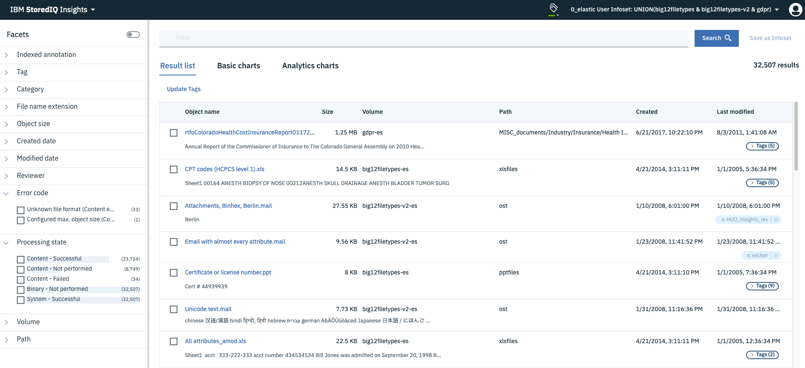

Application stack
The application stack provides the user interface for the IBM StoredIQ
Administrator, IBM StoredIQ Data Workbench, IBM StoredIQ Insights, and the IBM StoredIQ
Policy Manager products. The synchronization feature for integration with a governance
catalog is also part of the application stack.
Auto-classification
Automated document categorization, what IBM StoredIQ refers to as utoI
classification models, integrates the IBM® Content Classification's classification model
into the IBM StoredIQ infoset-generation process. Data Experts can use IBM Content
Classification to train a classification model, which is then registered with IBM
StoredIQ Administrator. The registered classification model can be applied to an
existing infoset in IBM StoredIQ Data Workbench to generate new metadata for the objects
in the infoset. Metadata can be used in rule-based filters to create new
infosets.
Cartridges
Cartridges are compressed files that contain analysis logic. When you add a
cartridge to IBM StoredIQ AppStack, it can detect new data in documents during indexing
and make these new insights searchable. For example, a sensitive pattern cartridge can
enable IBM StoredIQ to detect passport numbers, phone numbers, and other IDs. To apply
the analysis logic contained in the cartridge, you must run a Step-up Analytics action
that uses the cartridge on an infoset. IBM StoredIQ examines all documents in the
infoset, applies the analytics, and then stores the analysis results in the IBM StoredIQ
index.
Connector API SDK
A connector is a software component of IBM StoredIQ that is used to connect to a
data source such as a network file system and access its data. Using IBM StoredIQ
Connector API SDK, developers of other companies can develop connectors to new data
sources outside the IBM StoredIQ development environment. These connectors can be
integrated with a live IBM StoredIQ application to index, search, manage, and analyze
data on the data source.
Data servers
A data server obtains the data from supported data sources and indexes it. By
indexing this data, you gain information about unstructured data such as file size, file
data types, file owners. The data server pushes the information about volumes and
indexes to the gateway so it can be communicated to the application stack. Multiple data
servers feed into a single gateway. Data servers can be categorized in two types:
DataServer - Classic and DataServer - Distributed. A data server of the type DataServer
- Classic uses the embedded PostgreSQL database for storing the index. With a data
server of the type DataServer - Distributed, the index is stored in an Elasticsearch
cluster. Data servers of this type also provide better performance in search queries.
They can manage much larger amounts of data than data servers of the type DataServer -
Classic, thus making the IBM StoredIQ deployments more scalable. You can have both types
of data servers in your IBM StoredIQ deployment. In addition to completing standard
administrative tasks, administrators can deploy the IBM StoredIQ Desktop Data Collector
and index desktops from the data server.
DataServer - Classic
Data servers can be categorized in two types: DataServer - Classic and DataServer
- Distributed. DataServer - Classic refers to the regular data servers. It uses either
the current PostgreSQL or Lucene index as an index.
DataServer - Distributed
The distributed data server uses an Elasticsearch cluster instead of an embedded
Postgres database. It increases the scalability and flexibility of the IBM StoredIQ
deployment in a way that it can manage much larger amounts of data. Without adding more
data servers, data that is managed by the IBM StoredIQ deployment can be increased by
adding new nodes to the Elasticsearch cluster. Search queries perform better on
DataServer - Distributed.
Elasticsearch cluster
The Elasticsearch cluster attached to a data server of the type DataServer -
Distributed provides a single data store for all metadata and content of harvested
objects. Indexed data is distributed automatically across the nodes in the cluster.
Indexing and queries are load-balanced across all nodes. Nodes can be added dynamically
without downtime and the indexing process can use these newly added nodes without
further setup.
Gateway
The gateway communicates between the data servers and the application stack. The
application stack polls the gateway for information about the data on the data servers.
The data servers push the information to the gateway.
IBM StoredIQ Insights
IBM StoredIQ Insights provides dynamic and interactive filtering for your data with
easy access to all metadata and instant plain-text preview of document content for
full-text indexed volumes.
Faceted search lets you drill down to refine your search results as needed. In
addition, you can apply any valid IBM StoredIQ filter query. Tags let you categorize
the data for easier management. Visual representations of search results help you
gain further insights into your data. Several chart types let you look at and
explore data from different perspectives, thus helping you identify patterns and
relationships very quickly.
With IBM StoredIQ Insights, you can search data that is managed and indexed by a data
server of the type DataServer - Distributed. In mixed deployments that have classic
and distributed data servers, only the content from distributed data servers will be
searchable.
